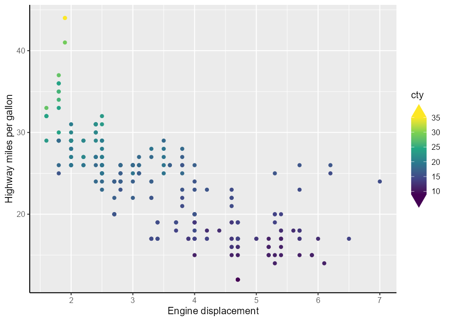
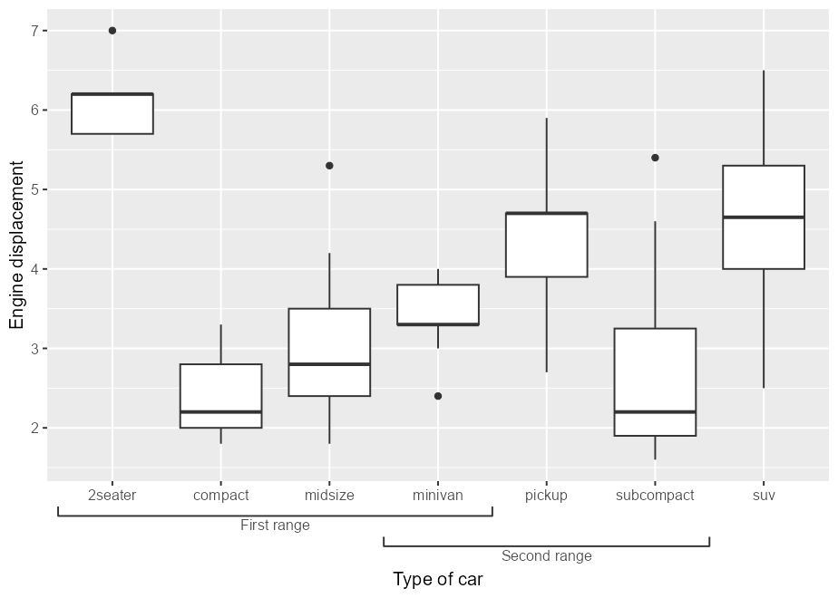
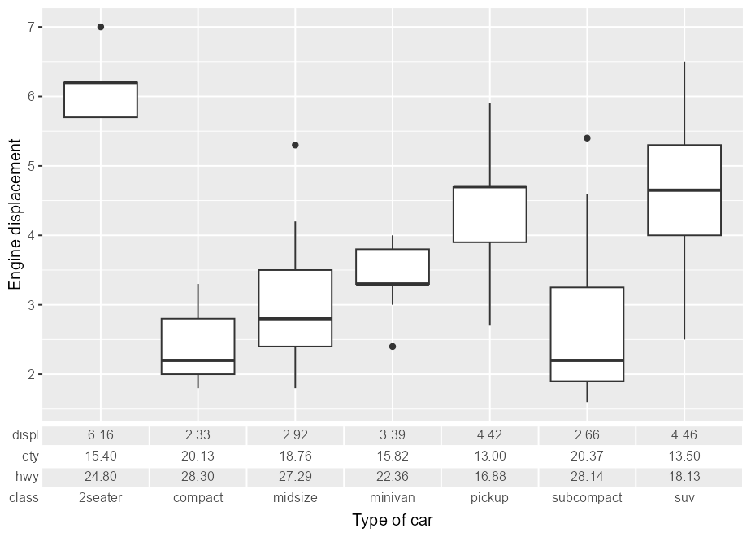
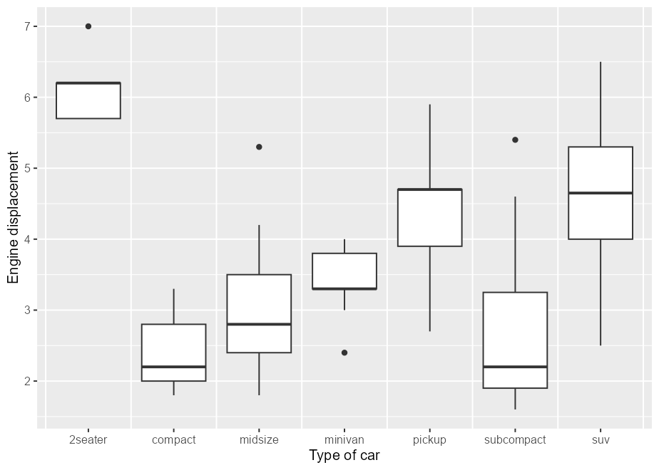

Warning You’re looking at an experimental branch that explores guide extensions with an upcoming ggproto overhaul in ggplot2.
The goal of gguidance is to provide additional guides to the ggplot2 ecosystem.
Please note that this repo is still being worked on and, while probably usable, isn’t finished.
Installation
You can install the development version of gguidance from GitHub with:
Examples
Let’s first set up a basic plot to experiment with
library(gguidance)
#> Loading required package: ggplot2
p <- ggplot(mpg, aes(displ, hwy)) +
geom_point() +
labs(
x = "Engine displacement",
y = "Highway miles per gallon"
) +
theme(axis.line = element_line())
Colour bars
Capped colour bar
A capped colour bar:
p + aes(colour = cty) +
scale_colour_viridis_c(guide = "colourbar_cap")
Violin colour bar
Using a violin as a colour guide:
p + aes(colour = cty) +
scale_colour_viridis_c(guide = guide_colour_violin(density = mpg$cty))
Histogram colour bar
Using a histogram as a colour guide:
p + aes(colour = cty) +
scale_colour_viridis_c(
guide = guide_colour_histogram(hist = hist(mpg$cty, breaks = 10))
)
Axes

Ranges
With bracketed ranges.
boxplot <- ggplot(mpg, aes(class, displ)) +
geom_boxplot() +
labs(
x = "Type of car",
y = "Engine displacement"
)
boxplot +
guides(x = guide_axis_nested(
range_start = c(0.5, 3.5),
range_end = c(4.5, 6.5),
range_name = c("First range", "Second range"),
bracket = "square"
))
Table
Using a table as an axis guide.
# Creating summary table
my_table <- lapply(split(mpg[, c("displ", "cty", "hwy")], mpg$class), colMeans)
my_table <- as.data.frame(do.call(rbind, my_table))
my_table[] <- lapply(my_table, scales::number, accuracy = 0.01)
my_table$class <- rownames(my_table)
# Use summary table as axis guide
boxplot +
guides(x = guide_axis_table(table = my_table, key_col = class))
Grids
Regular
Like the vanilla panel grid, but with more options for where breaks appear. Here, between categories.
boxplot +
coord_guided(guide_grid(x_breaks = breaks_between()))
Plus
Subtler grid lines by only drawing the intersections, making a ‘plus’ symbol.
p + coord_guided("grid_plus")
Zebra
Alternating stripes between breaks.
boxplot + coord_guided("grid_zebra") +
theme(panel.grid.major.x = element_line(alpha("grey50", 0.1)))